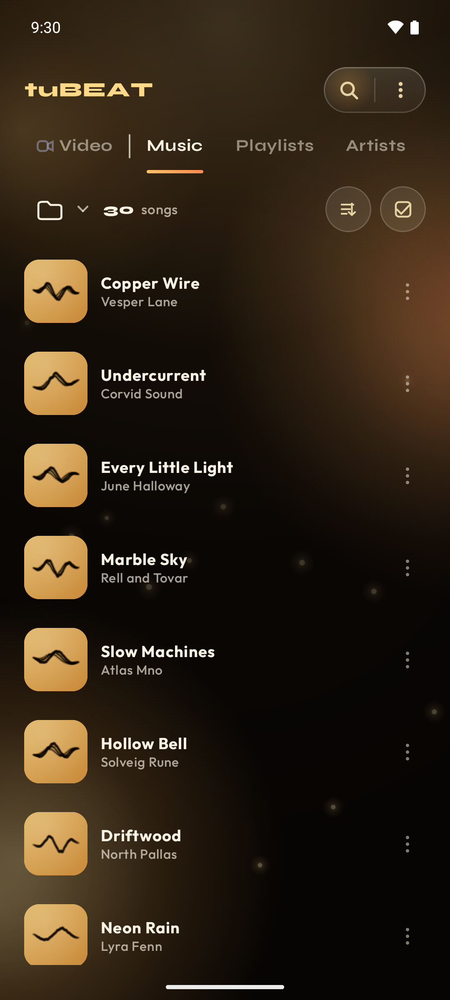
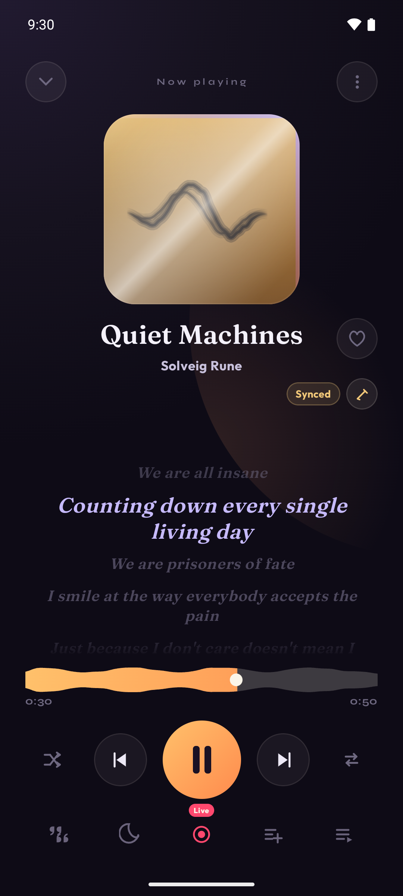
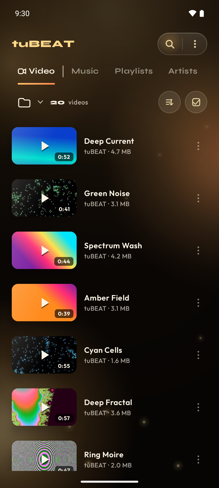
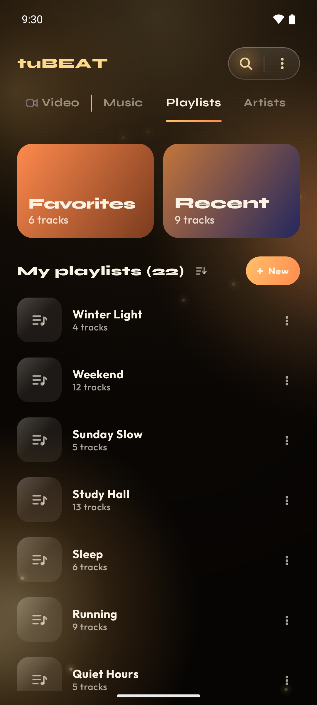

Local player · Android
tuBEAT plays the music and video already on your phone — with a waveform you can actually scrub, playlists that survive an uninstall, and playback that keeps going when the screen goes dark.
Free · No account, no sign-up · Android 7.0 and up




What it does
There is nothing to subscribe to and no catalogue to browse. tuBEAT opens your own files and then gets out of the way.
The seek bar draws the track's actual waveform, so you can land on the chorus instead of hunting for it along a one-pixel line.
One library, two tabs, one playback engine — so a video behaves the same way a song does.
A real media session: lock-screen controls, notification, headset buttons, and playback that survives the screen turning off.
Browsable on the car screen, and a phone mode with large targets that offers to open itself when your car's Bluetooth audio connects.
Written as standard .m3u8 files in your own storage, so uninstalling tuBEAT does not take them with it.
Browse the way your files are actually arranged. Merge an artist that duplicated itself, and hide what you never want to see again.
Synced lyrics when they can be found — and an editor for when they cannot, with line timing you fix yourself.
Optional crossfade between tracks, and the gapless behaviour a local player is supposed to have.
What you actually played, counted on the phone. No leaderboard, no year-in-review, no sharing you did not ask for.
Turn a track into a shareable card — artwork, title and waveform — exported as an image or a short video.
Runs from Android 7.0. Reduced motion, high contrast and large text are settings, not afterthoughts.
Privacy
No account, no sign-up, nothing for sale. Your music and video are read from your device and are never uploaded.
Two things do leave the phone, and it is fair that you know which: when a track plays, its title and artist may be sent to look up lyrics and cover art, and the app reports crashes and anonymous usage events so it can be fixed. Nothing else about your library is transmitted.
Support
Write to destek@kurtsoft.com.tr and say what you did and what happened. For a playback problem, the file format and the phone model help more than anything else.